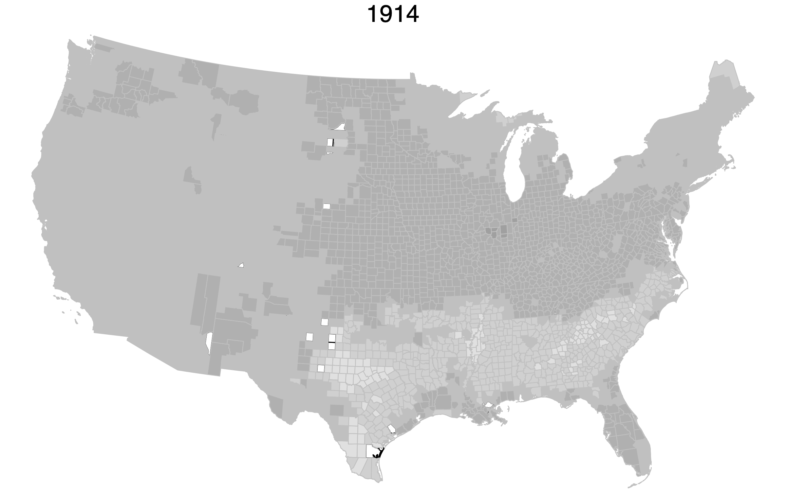
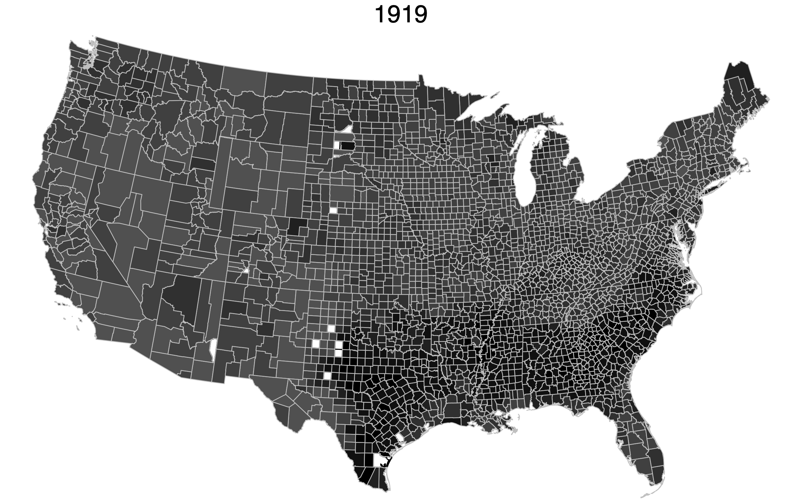
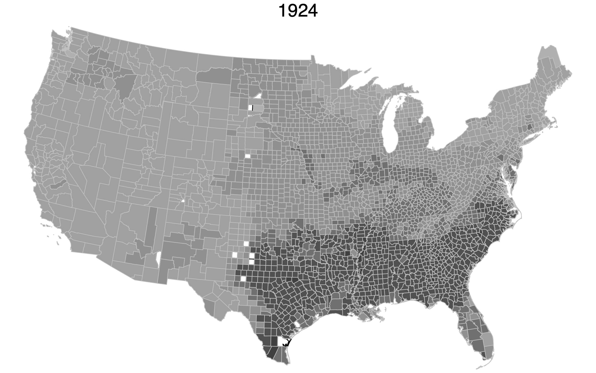
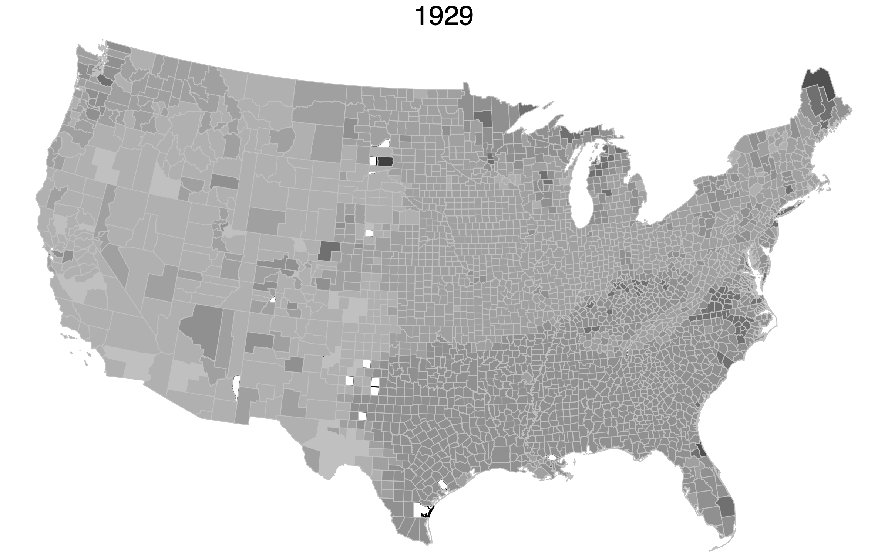

Skill Formation, Child Labor, and the Schooling Consequences of the World War I Agricultural Boom
This paper studies how the World War I agricultural commodity price boom affected human capital accumulation in the United States. The boom generated large, temporary increases in crop revenues, with the largest gains concentrated in the cotton and tobacco South. The paper identifies two channels through which the boom reduced completed schooling: (1) an opportunity cost channel, where higher farm wages pulled teenagers out of school, and (2) a dynamic complementarity channel, where the interaction between early childhood resources and local child labor intensity determined whether younger children gained or lost schooling.
Key findings
- At the peak of the boom (1919), enrollment and average daily attendance fell sharply, reversing several years of growth associated with the high school movement.
- Greater exposure during teenage years (ages 11 to 14) reduced completed schooling by 0.27 to 0.47 years, with effects concentrated at the high school margin and larger for Black men.
- For children exposed during early childhood (ages 0 to 4), the net effect depends on local child labor intensity. Once child labor is accounted for, the direct effect on boys' schooling is approximately zero; the negative overall effect is driven by high child labor counties.
- For girls, the direct effect of early exposure is weakly positive, consistent with lower opportunity costs in agricultural labor markets.
Data and methods
- County-level crop revenue index combining pre-WWI output shares (1910 Census of Agriculture) with annual international commodity prices
- Newly constructed county-level panel of enrollment and average daily attendance for 26 states, 1910 to 1930
- Individual-level linked census data (1910/1920 to 1940) via Census Tree
- Difference-in-differences exploiting variation in exposure across counties and birth cohorts
Changes in local labor market conditions alter both the opportunity cost of schooling and the resources available for early-life investment, making the net effect on human capital theoretically ambiguous. A large literature documents the link between economic conditions and educational attainment: exposure to better employment opportunities tends to reduce schooling for students at the margin between completing an additional year of education and entering the labor force in the context of industry growth (Charles et al. 2015; Atkin 2016), natural resource booms (Black et al. 2005; Emery et al. 2012; Cascio and Narayan 2022; Kovalenko 2023), and manpower shortages (Jaworski 2014).1
Yet improved labor market conditions also increase parental wages and household resources, potentially raising early-life investments (Shah and Steinberg 2017; Shah and Steinberg 2021). In the presence of dynamic complementarities in skill formation, early investments increase the returns to subsequent educational inputs (Cunha and Heckman 2007; Heckman 2007; Caucutt and Lochner 2020; Johnson and Jackson 2019). Where child labor is prevalent, however, early investments that raise a child's productivity may increase the marginal return to work and ultimately reduce lifetime schooling (Edmonds and Pavcnik 2005; Bau et al. 2020; Malpede 2025). Which mechanism dominates depends on the child's age and productivity, and the structure of local labor markets. We exploit the large agricultural commodity boom triggered by World War I to trace how labor market shocks at different points in childhood shaped human capital accumulation over the subsequent three decades.
The agricultural boom of the 1910s was driven by global disruptions to production and trade caused by World War I. At the 1919 peak, cotton prices were 300 percent above their prewar average and farm wages had more than doubled. Regions differed in their exposure depending on prewar crop specialization and agro-climatic conditions. Following Jaremski and Wheelock (2020), Kitchens and Rodgers (2023), and Rajan and Ramcharan (2015), we construct a county-level index of crop revenue that combines pre-World War I output shares from the 1910 Census of Agriculture (Haines et al. 2018) with annual international commodity prices (Carter et al. 2006). Because quantities are fixed at prewar levels, the index captures variation in local revenue driven by global price movements rather than endogenous changes in local production.
We first document the short-run effects of the boom on schooling. To do this, we construct new county-level data on enrollment and average daily attendance for more than 20 states between 1910 and 1930, building on recent work documenting access to schooling in this period (Carruthers and Wanamaker 2017; Card et al. 2022). At the peak of the boom in 1919 and 1920, enrollment and average daily attendance reversed several years of growth associated with the high school movement.
We then examine long-run human capital outcomes using linked census data between 1910 and 1940 (Price et al. 2021). For older children residing on farms in 1910 (with exposure averaged over ages 11 to 14), a doubling of the crop revenue index reduced completed schooling by 0.40 years for white men, 0.47 years for Black men, 0.27 years for white women, and 0.32 years for Black women, with effects concentrated in high school. For children aged 0 to 4 at exposure, the net effect of increased household resources on completed schooling depends on local child labor intensity. In 1910, child labor participation was substantial: approximately 18 percent of 10 to 14 year-olds reported a gainful occupation nationally, with shares considerably higher in agricultural counties. For boys, the direct effect of higher parental resources on completed schooling is statistically indistinguishable from zero once we account for child labor intensity, and the negative overall effect is driven by counties with high child labor. For girls, the direct effect is weakly positive and less sensitive to local child labor demand, consistent with lower opportunity costs for girls in agricultural labor markets.
Taken together, our estimates are consistent with a model in which higher wages raise the opportunity cost of schooling for older children, while for younger children, the interaction between increased household resources and child labor intensity determines whether early-life resource gains translate into higher completed schooling (Shah and Steinberg 2017; Bau et al. 2020).2 Even temporary labor demand expansions during periods of structural change can permanently reshape the distribution of human capital across cohorts and regions.
Our paper makes four contributions. First, we provide new evidence on the effects of local labor demand shocks on human capital accumulation during a period of rapid structural transformation (Goldin 1998; Goldin 1999; Fiszbein 2022). The agricultural setting connects our work to research linking shocks to Southern agriculture with educational attainment (Baker 2015; Baker et al. 2020). The heterogeneity in our estimates, with larger responses for Black men and women, highlights how differences in opportunity costs and labor market access shaped long-run educational attainment.
Second, we contribute to the development economics literature on agricultural shocks and child labor (Bau et al. 2020; Beegle et al. 2006; Kruger 2007; Duryea et al. 2007). While prior work focuses primarily on contemporaneous schooling and labor supply responses, we link early-life exposure to completed educational attainment decades later. In the spirit of Bau et al. (2020), our results provide evidence that local child labor intensity can attenuate or reverse the gains from additional household resources.
Third, we extend the literature on the domestic consequences of the world wars. Prior work has examined marriage and fertility (Abramitzky et al. 2011; Vandenbroucke 2014; Kitchens and Rodgers 2023), labor force participation (Boehnke and Gay 2022; Gay 2023), and discrimination (Ferrara and Fishback 2024; Ang and Chinoy 2026), but relatively little attention has been paid to educational attainment in the United States. Our findings complement research on World War II mobilization and skill upgrading (Jaworski 2014; Goldin 1991; Goldin and Olivetti 2013; Carr and Rettenmaier 2019; Lennon 2023; Ferrara 2022).
Finally, we contribute new data on the early twentieth-century expansion of American schooling. We construct a county-level panel of enrollment and average daily attendance from state education reports for more than 20 states between 1910 and 1930. These data reveal a sharp decline in enrollment and attendance at the peak of the boom in 1919 and 1920 that has not been previously documented. The decline reversed several years of sustained growth in enrollment associated with the high school movement, complementing previous work on this period (Goldin 1998; Carruthers and Wanamaker 2017; Card et al. 2022; Bleemer and Quincy 2025; Doxey et al. 2022).
In this section, we describe a simple household model of human capital investment, drawing on Shah and Steinberg (2017), that guides our empirical analysis of the World War I agricultural boom. The model highlights how wage shocks at different points in childhood generate competing effects on schooling. Then, following Bau et al. (2020), we extend the framework to incorporate child labor, showing how the local intensity of child labor mediates these effects.
Households consist of one parent and one child. The parent makes consumption and investment decisions to maximize the lifetime utility of the family.3 Children live for three periods: in the first period, the child only consumes resources; in the second period, the child consumes resources and has time to either attend school or work; in the third period, the child works and receives a wage determined by their level of human capital. Household utility depends on consumption in the first two periods and on the child's terminal human capital:
where $c_t$ is consumption, $e_t$ is the child's human capital in period $t$, and $\beta$ is a discount factor.
Income is determined by an exogenously given wage in each period, $w_t$, human capital of the parent, $h$, and human capital of the child in each period, $e_t$. In the first period, household income equals parent earnings, $w_1 h$, and households spend all income on consumption, $c_1 = w_1 h$. In the second period, the child spends $s_2$ time in school and the remainder of their time working. This means that income in the second period is $w_2[h+(1-s_2)e_2]$, which is available for consumption. The child's human capital evolves as follows: in the first period, $e_1=0$; in the second period, human capital depends on early-life consumption, $e_2=f_2(c_1)$; and in the third period, human capital depends on prior human capital, consumption, and schooling, $e_3=f_3(e_2, c_2, s_2)$. The link between $c_1$ and $e_2$ captures the idea that household resources during early childhood raise the child's later productivity. We assume that $f_2$ and $f_3$ are increasing and concave in each argument.
Since there are no choice variables in the first period, we consider the parent's problem starting in period 2. Substituting the budget constraint and the human capital production function into the objective yields:
At an interior solution ($c_2^*, s_2^*$), parents equate the marginal cost of schooling (forgone child earnings) with the discounted marginal benefit of additional human capital:4
Our interest is in how the optimal schooling level, $s_2^*$, changes in response to wage increases at different points over the life cycle. Taking the total derivative of the first-order condition and solving for $\frac{\partial s_2^*}{\partial w_2}$:
The net effect of higher wages on schooling for working-age children is ambiguous. Higher wages raise the opportunity cost of time in school (substitution effect), but they also increase household income, which reduces the marginal utility of consumption and makes forgone child earnings less costly (income effect). The third term is assumed to be positive if, as consumption increases and the marginal utility of consumption falls, schooling becomes a more productive way to generate human capital. Ultimately, the sign of $\frac{\partial s_2^*}{\partial w_2}$, and therefore the effect on lifetime human capital, depends on which channels dominate.
For young children, an increase in the period 1 wage unambiguously raises human capital in period 2, since $e_2 = f_2(c_1)$ and $c_1 = w_1 h$ ($\frac{\partial e_2^*}{\partial w_1}=h \frac{\partial f_2}{\partial c_1} > 0$). The question is how this early human capital gain affects the schooling decision in period 2. The effect of $w_1$ on $s_2^*$ operates through $\frac{\partial s_2^*}{\partial e_2}$: children with more human capital are more productive, which raises the return to work (substitution effect), but higher productivity also increases household income and may raise the return to further schooling through dynamic complementarities (Cunha and Heckman 2007; Heckman 2007; Caucutt and Lochner 2020). Formally,
Increased human capital affects the optimal choice of schooling by making children more productive in the labor market. In settings where children are especially productive, such as in the cultivation of cacao and coffee (Dammert 2008; Bai and Wang 2020), the literature has shown that the substitution effect is more likely to dominate. At the same time, higher human capital increases income, resulting in higher consumption, which reduces the marginal utility of consumption (income effect). Finally, higher human capital could make children better learners via dynamic complementarities, or through increased consumption at younger ages. Ex ante, these different channels lead to an ambiguous prediction. In our context, children in the early twentieth-century American South were similarly productive in cotton cultivation and other labor-intensive crops, making this a natural setting to test these predictions. Our empirical framework estimates $\frac{\partial s_2^*}{\partial w_1}$ and $\frac{\partial s_2^*}{\partial w_2}$ using variation in exposure to crop revenue shocks due to World War I.
Bau et al. (2020) extend this framework by allowing the return to child labor to vary across locations. In areas with high child labor intensity, the child's increased productivity from early human capital investment ($e_2$) translates more directly into higher child labor earnings, amplifying the substitution effect within $\frac{\partial s_2^*}{\partial e_2}$. This generates a testable prediction: in high-child-labor locations, the substitution effect is more likely to dominate the income and dynamic complementarity effects, so that early resource shocks reduce completed schooling. In low-child-labor locations, where children cannot easily convert higher productivity into labor market earnings, the income effect and dynamic complementarities are more likely to prevail, and early resource shocks should weakly increase schooling.
Following the assassination of Archduke Franz Ferdinand on June 28, 1914, World War I escalated with fighting that destroyed agricultural production in Europe, reallocated labor from farms to the battlefield, depleted inventories, and disrupted international trade flows (Hibbard 1919; Nourse 1924; Tinley 1942). As a result, the United States and Canada supplied much of the allies' foodstuffs rather than traditional trading partners such as Argentina, Australia, and Russia (Nourse 1924). These forces led to large increases in the price of agricultural commodities. For example, cotton prices, at their 1919 peak, were 300 percent higher than the prewar average, while wheat prices were 260 percent higher than before the war.
Figure 1: Agricultural Prices and Wages, 1910-1930


Notes: Panel A shows national prices for 12 crops used to construct the crop revenue index, relative to their 1908-1914 average. Panel B shows the crop revenue index and a farm wage index.
Figure 1 shows prices for twelve agricultural commodities between 1910 and 1930, normalized to their 1908-1914 average. The second panel plots the crop revenue index alongside a national farm wage index, confirming that wages closely tracked crop revenues over this period. The spike in agricultural prices also led to a substantial expansion of production: during the war, up to 50 million acres were brought into cultivation (Carter et al. 2006; Nourse 1924). Wheat exports increased by approximately 30 percent by 1918; barley exports increased by over 350 percent. The boom increased demand for agricultural labor at all levels, including children, who were widely employed in cotton picking, tobacco cultivation, and other labor-intensive tasks.
Contemporary newspapers documented the connection between bumper crops, high prices, and labor scarcity. The Birmingham Age-Herald reported in January 1918 that "Bumper crops were produced in 1917 and Alabama's prosperity today is due in great measure to the large harvests and the high prices which the farmers received for their products. With still further increase in production the labor problem will become more acute" (Birmingham Age-Herald 1918). The Public Ledger of Maysville, Kentucky similarly noted that "in 1917 there was an advance of farm wages over the figures of 1916 of an average of 24.2 per cent," attributing the increase to "the demand for labor and, of course, to high prices for farm products" (Public Ledger 1918).
Systematic county-level wage data do not exist for this period, so we construct indices of agricultural revenues to proxy for changes in local labor market conditions. At the peak of the boom in 1919, agricultural wages were 2.3 times their prewar level. Following the war, wages fell but remained elevated. Kitchens and Rodgers (2023) provide additional evidence that agricultural crop revenues track national wages and county-level retail sales.
Our analysis draws on three main sources of data. First, we use county-level agricultural output data and national commodity prices to construct the measures of exposure to the agricultural boom. Second, we use individual-level data from complete count censuses of population linked across decades. Third, we construct a new county-level panel of school enrollment and average daily attendance from state education reports.
Agricultural Revenue and Exposure Index
The crop revenue index and exposure index rely on two primary data sources. County-level output for twelve crops comes from the 1910 Census of Agriculture (Haines et al. 2018), and annual national prices for each commodity come from Carter et al. (2006). The index is normalized by the average revenue calculated using prices from 1908 to 1914.5 Formally, the index is defined as:
where $R_{ct}$ is the crop revenue index for county $c$ in year $t$, $Q_{i,c,1910}$ is the output of crop $i$ in county $c$ in 1910, and $P_{i,t}$ is the price of crop $i$ in year $t$. The index has several useful properties. First, by fixing output at 1910 levels, we prevent endogenous changes in crop patterns from entering the index. Second, prices are determined in international commodity markets and therefore do not reflect local economic conditions.6
Figure 2: Crop Revenue Index by County, 1914-1929




Notes: The figure shows four snapshots of the geographic variation in the crop index over a 15-year period. Darker shades indicate higher values of the crop revenue index.
Figure 2 shows the variation over time and across counties in our crop revenue index. For example, the South (specialized in cotton and tobacco) experienced larger increases in the crop index at the peak in 1919 relative to the Midwest (specialized in wheat and oats) and the Great Plains (focused on livestock production). The regions most exposed to the boom, particularly the cotton South, were also home to the largest Black populations and had among the highest rates of child labor in the country. After the war, in both 1924 and 1929, the cross-county variation in the index diminishes.
Because the boom was temporary and regions differed in their crop specialization, individuals born in different years and living in different counties experienced distinct local economic conditions during childhood. We measure differential exposure of each cohort by averaging the agricultural index over a window of $T$ years starting at age $z$. Formally, the exposure index is:
The exposure index, $E_{hc}$, varies across counties through differences in prewar crop specialization and across cohorts through the timing of the wartime price spike.7
Linked Census Data
Outcome data are derived from the 1940 complete count of the Census of Population (Ruggles et al. 2024). The 1940 census only provides information on previous location based on state-of-birth. In order to better reflect exposure to local economic conditions during the World War I agricultural commodity price boom, we use information from Price et al. (2021) to link individuals from the 1940 Census back to earlier census years when we can observe county-of-residence and therefore the probable location of exposure. Our empirical tests focus on two sets of cohorts that were living on farms when first observed. First, we focus on cohorts born between 1890 and 1910, using their 1910 Census record linked to 1940. Second, we focus on cohorts born 1900 to 1920, linking their 1910 or 1920 Census record to 1940.
County-Level Enrollment and Attendance Data
For this project we collected and digitized annual and biennial state-level education reports for each state in the contiguous United States between 1910 and 1930, building on prior data collection efforts by Carruthers and Wanamaker (2017) and Card et al. (2022).
Additional Data
To further isolate the effect of the World War I agricultural boom from other factors, we draw on a variety of datasets to control for the role of potential confounds. Importantly, we use information on compulsory schooling laws and work restrictions specific to each cohort. As noted by Goldin and Katz (2008), work restrictions and compulsory schooling reinforce one another. We also include information on conscription during World War I (Kitchens and Rodgers 2023). We control for the arrival date of the boll weevil (Bloome et al. 2017; Baker 2015; Baker et al. 2020), hookworm and malaria rates (Bleakley 2007; Bleakley 2009; Hoehn-Velasco 2021), exposure to the Spanish flu (Kitchens and Rodgers 2023), and access to Rosenwald schools (Aaronson and Mazumder 2011; Aaronson et al. 2014).
Our empirical strategy exploits variation in the exposure index across counties and birth cohorts to estimate the effect of the World War I agricultural boom on educational attainment. We focus on two samples of individuals linked to the 1940 Census, where we observe completed years of schooling. The first sample links cohorts born 1890 to 1910 from the 1910 Census to 1940, capturing individuals who were of school age during the boom. The second links cohorts born 1900 to 1920 from the 1910 or 1920 Census to 1940, capturing individuals who experienced the boom during early childhood.
Trends in Enrollment and Attendance
We first examine aggregate patterns in county-level enrollment and attendance to motivate the regression analysis that follows.
Figure 3: Enrollment and Attendance Trends by Boom Quartile


Notes: Panels A and B show average county-level enrollment and average daily attendance, normalized to 1913, across four groups based on the maximum of the 1919 agricultural boom.
Throughout the sample period, both enrollment and average daily attendance grew rapidly, consistent with prior evidence (Goldin 1998). By 1930, enrollment grew by approximately 0.10 to 0.23 log points and attendance by 0.20 to 0.43 log points relative to 1913. In 1919 and 1920, at the peak of the agricultural boom, enrollment and average daily attendance fell by approximately 0.05 to 0.08 log points below the 1913 baseline. The St. Tammany Farmer of Covington, Louisiana reported in 1916 that "the authorities are giving leave for boys of eleven years old to be taken out of school and put to farm work" (St. Tammany Farmer 1916). Similarly, the Edgefield Advertiser in South Carolina urged that "another session should not be lost to many boys and girls who have attained the school age and yet are kept out of school" (Edgefield Advertiser 1916).
Opportunity Cost Channel
The theoretical model predicts that higher agricultural wages raise the opportunity cost of schooling for teenagers, reducing completed education. Formally, the estimating equation is:
where $Y_{ihc}$ is years of schooling in 1940 for individual $i$ in birth cohort $h$ and county $c$, $E_{hc}$ is the exposure index, $\mathbf{X}_{ihc}$ is a vector of parental characteristics measured in 1910, $\mathbf{Z}_c$ is a vector of county characteristics, $\alpha_c$ and $\phi_h$ are county and cohort fixed effects.8 Standard errors are clustered at the state level (Conley and Kelly 2025).
Table 1: The Effect of Exposure to World War I Agricultural Boom
| Men | Women | |||||
|---|---|---|---|---|---|---|
| (1) | (2) | (3) | (4) | (5) | (6) | |
| Panel A: White | ||||||
| Exposure | −0.436 | −0.397 | −0.404 | −0.223 | −0.254 | −0.274 |
| (0.130) | (0.130) | (0.089) | (0.093) | (0.092) | (0.074) | |
| Observations | 4,228,438 | 3,888,223 | 3,888,223 | 3,033,169 | 2,760,954 | 2,760,954 |
| Panel B: Black | ||||||
| Exposure | −0.558 | −0.512 | −0.466 | −0.425 | −0.238 | −0.316 |
| (0.149) | (0.158) | (0.116) | (0.147) | (0.184) | (0.157) | |
| Observations | 429,755 | 354,673 | 354,673 | 108,726 | 80,402 | 80,402 |
| Cohort & county FE | ✓ | ✓ | ✓ | ✓ | ✓ | ✓ |
| Parental controls | ✓ | ✓ | ✓ | ✓ | ||
| Additional controls | ✓ | ✓ | ||||
Notes: The dependent variable is years of schooling. Panels A and B include whites and Blacks, respectively, with men in columns 1 through 3 and women in columns 4 through 6. Columns 1 and 4 include cohort and county fixed effects. Columns 2 and 5 add parental controls measured in 1910 (father's occupational score, father's birthplace, mother's birthplace, father illiteracy, mother illiteracy, maternal labor force participation, and home ownership). Columns 3 and 6 add interactions between birth cohort and WWI inductions, County Health Organization presence, hookworm infection, malaria death rate, Rosenwald School presence, Boll Weevil infestation, and Prohibition. Standard errors in parentheses are clustered at the state level.
In Table 1, we report our baseline estimates. For white men (Panel A, column 1), doubling the exposure index reduces educational attainment by 0.436 years of schooling, statistically significant at the 1 percent level. Adding parental characteristics (column 2) reduces the estimate to 0.397. Including potential confounds (column 3), we estimate a 0.404 reduction in years of schooling.
Moving to Panel B, for Black men we estimate that doubling exposure reduces educational attainment by 0.558 years (column 1), about 25 percent larger than for white males. Including controls reduces the estimates to 0.512 and 0.466 (columns 2 and 3). The stronger response is consistent with lower returns to additional schooling for Black men in this period.9
In columns 4 through 6, we estimate effects for women. For white women, we estimate a 0.223 reduction in years of schooling (column 4). The smaller estimates for women are consistent with lower opportunity costs in agricultural labor markets.10
Table 2: Robustness of Effect of Exposure to World War I Agricultural Boom
| Same | Owns | Rents | Spanish | Off | ||
|---|---|---|---|---|---|---|
| Baseline | state | Farm | Farm | Flu | Farm | |
| (1) | (2) | (3) | (4) | (5) | (6) | |
| White Men | ||||||
| Exposure | −0.404 | −0.450 | −0.356 | −0.348 | −0.339 | 0.021 |
| (0.089) | (0.095) | (0.079) | (0.131) | (0.079) | (0.140) | |
| Observations | 3,888,223 | 2,936,473 | 2,665,847 | 1,222,356 | 2,455,720 | 5,863,396 |
| Black Men | ||||||
| Exposure | −0.466 | −0.564 | −0.457 | −0.436 | −0.398 | −0.286 |
| (0.116) | (0.117) | (0.248) | (0.149) | (0.146) | (0.102) | |
| Observations | 354,673 | 236,919 | 104,027 | 250,483 | 200,390 | 253,088 |
| White Women | ||||||
| Exposure | −0.274 | −0.320 | −0.167 | −0.196 | −0.198 | −0.046 |
| (0.074) | (0.077) | (0.070) | (0.100) | (0.073) | (0.066) | |
| Observations | 2,760,954 | 2,162,191 | 1,919,290 | 841,627 | 1,758,782 | 3,674,080 |
| Black Women | ||||||
| Exposure | −0.316 | −0.491 | 0.121 | −0.632 | −0.308 | −0.043 |
| (0.157) | (0.153) | (0.356) | (0.226) | (0.238) | (0.227) | |
| Observations | 80,402 | 63,215 | 28,109 | 52,071 | 49,219 | 69,022 |
| FEs and Controls | ✓ | ✓ | ✓ | ✓ | ✓ | ✓ |
Notes: Each panel focuses on a different combination of race and gender. Column 1 reproduces the baseline. Column 2 restricts to individuals living in their birth state. Columns 3 and 4 split by farm ownership. Column 5 adds interactions with 1918 Influenza mortality. Column 6 restricts to those not living on farms. Standard errors in parentheses are clustered at the state level.11
In Table 2, the baseline estimates are robust to restricting the sample to those living in their birth state (column 2), splitting by farm ownership (columns 3 and 4), controlling for the 1918 Influenza (column 5), and restricting to off-farm residents (column 6). For those off the farm (column 6), the point estimates are close to zero for white men and women, confirming that the effects are concentrated among farm households.
The overall average effect masks differences across the distribution of years of schooling. The decrease is concentrated in the high school grades: a doubling of the exposure index reduces the probability of completing grades 9 through 12 by approximately 10 percentage points for males and 6 to 8 percentage points for women.12
Early Childhood Investment Channel
We now turn to our analysis of young children, ages 0 to 4. Following Bau et al. (2020), we include an interaction term between the childhood local labor demand shock and the intensity of child labor force participation. We measure child labor force participation, $CL_c$, at the county level in 1910 as the share of 10 to 14 year-olds that list an occupation in the Census. The estimating equation is:
Intuitively, in places where child labor is low or non-existent, the estimate of $\beta_{1}$ captures the net effect of increased household resources on human capital. The interaction term, $\beta_{2}$, captures the extent to which the opportunity cost of child labor offsets these gains. If $\beta_1$ is non-negative and $\beta_2$ is negative, the overall negative effect is attributable to child labor intensity rather than to the resource shock itself.
Table 3: The Effect of Exposure to World War I Agricultural Boom During Youth
| Men | Women | |||||
|---|---|---|---|---|---|---|
| (1) | (2) | (3) | (4) | (5) | (6) | |
| Panel A: White | ||||||
| Exposure Young | −0.517 | −0.050 | −0.224 | 0.004 | 0.084 | 0.080 |
| (0.133) | (0.135) | (0.132) | (0.114) | (0.112) | (0.103) | |
| Exp. × Fract. Child Work | −0.701 | −0.120 | ||||
| (0.171) | (0.201) | |||||
| Exp. × Q4 Child Work | −0.244 | −0.063 | ||||
| (0.071) | (0.075) | |||||
| Observations | 4,404,689 | 4,404,542 | 4,404,689 | 3,049,826 | 3,049,718 | 3,049,826 |
| Panel B: Black | ||||||
| Exposure Young | −0.547 | −0.079 | −0.301 | 0.012 | 0.242 | −0.170 |
| (0.157) | (0.180) | (0.203) | (0.149) | (0.232) | (0.185) | |
| Exp. × Fract. Child Work | −0.555 | −0.278 | ||||
| (0.123) | (0.195) | |||||
| Exp. × Q4 Child Work | −0.148 | 0.111 | ||||
| (0.081) | (0.096) | |||||
| Observations | 470,282 | 470,282 | 470,282 | 152,550 | 152,550 | 152,550 |
| FEs and controls | ✓ | ✓ | ✓ | ✓ | ✓ | ✓ |
Notes: The dependent variable is years of schooling in 1940. $E_{hc}$ is the exposure index cumulated over ages 0 to 4. $CL_c$ is the fraction of children aged 10 to 14 in the 1910 census working in a county. Q4 Child Work is an indicator for whether the county was in the top quartile of child labor intensity in the 1910 census. Standard errors in parentheses are clustered at the state level.
In Table 3, column 1 (Panel A) reports the estimated relationship excluding child labor controls for white men: a doubling of the exposure index reduces schooling by 0.517 years. However, column 2 shows that the effect is driven by returns to child labor in locations with high levels of child labor. Using the continuous child labor measure, the direct effect of the agricultural index on schooling is statistically indistinguishable from zero, and there is a negative and statistically significant coefficient on the interaction term. For Black males (Panel B), column 2 tells a similar story: the direct effect is close to zero once we account for the interaction.
For women (columns 4 to 6), the direct effect ($\beta_1$) is weakly positive once we account for child labor, while the interaction term ($\beta_2$) is negative but imprecisely estimated, consistent with lower opportunity costs for girls in agricultural labor markets.
Taken together, the results show that the negative effect of early-life exposure on completed schooling operates through child labor intensity. For boys, the direct effect of early resources ($\beta_1$) is indistinguishable from zero, and the negative overall effect is driven entirely by the interaction with child labor ($\beta_2$). For girls, the direct effect is weakly positive in some specifications, consistent with dynamic complementarities, but the interaction with child labor is smaller and less precisely estimated.13
The World War I agricultural boom generated large, temporary increases in crop revenues across the United States, with the largest gains concentrated in the cotton and tobacco South. We use this episode to study how changes in local economic conditions affected human capital accumulation during the early decades of the high school movement. Our analysis yields three main findings.
First, the boom reduced education for teenagers on the farm. Using newly constructed county-level data, we document a decrease in enrollment and average daily attendance at the peak of the boom. Second, linked census data confirm that these short-run disruptions translated into permanent reductions in completed schooling and that these effects are concentrated at the high school grades. Finally, the overall negative effects mask important heterogeneity. For children exposed during early childhood, the overall negative effect on completed schooling is driven by child labor intensity rather than the resource shock itself. Once we account for local child labor, the direct effect of early exposure is approximately zero for boys and weakly positive for girls. In counties with high child labor intensity, the interaction between early resources and child labor demand reduces completed schooling, consistent with Bau et al. (2020). These results underscore the role of local labor markets in determining whether resource windfalls translate into lasting human capital gains and are consistent with dynamic complementarities whose effects on lifetime schooling are mediated by the opportunity cost of child labor (Cunha and Heckman 2007; Heckman 2007).
The income channel through which the boom affected schooling operated primarily through crop composition: counties that grew cotton and tobacco experienced the largest revenue gains because these commodities saw the largest wartime price increases. These same counties had high rates of child labor, reflecting the labor intensity of cotton and tobacco cultivation. The high school movement was one of the defining features of American economic development in the early twentieth century (Goldin 1998; Goldin 1999). Our results show that even a temporary commodity boom can interrupt this type of transformation, with effects that persisted for decades and are experienced unevenly across demographic groups and regions.
- It has also been well documented that recessions can increase schooling and that graduation during a recession can have a scarring effect. See, for example, Barr and Turner (2015), Goodman and Winkelman (2025), and Rothstein (2023). ↩
- Using our estimates, we recover discount rates required to rationalize our findings with forward-looking decisions regarding the tradeoff between foregone earnings and completed schooling. The range of discount rates we find is consistent with estimates reported in the macroeconomics and public finance literature (Arrow et al. 2014). Our estimates also closely correspond to contemporary interest rates and bond yields (NBER 2024). ↩
- The model abstracts away from the endogenous decisions of how many children to have, how to allocate investments across children, and spousal matching choices. ↩
- Shah and Steinberg (2017) place additional assumptions on the second-order derivatives to ensure a globally concave objective function with a unique maximum. ↩
- The index in Kitchens and Rodgers (2023) is similar to one utilized by Rajan and Ramcharan (2015) and Jaremski and Wheelock (2020), however, it adds additional crops to represent forage crops as inputs to livestock output. ↩
- The index is constructed in the spirit of a shift-share instrument. A recent concern regarding these types of measures is that the weights may be endogenous (Goldsmith-Pinkham et al. 2020). However, given that our shares depend on agro-climatic factors, we have no reason to suspect that our shares are endogenous. As a robustness check, we develop an instrumental variables strategy using potential crop yields rather than observed crop shares. ↩
- In our regression analysis, we will also estimate the effects for those living off of farms in 1910. ↩
- Parental characteristics measured in 1910 include father's occupational score, father's birthplace, mother's birthplace, father illiteracy, mother illiteracy, maternal labor force participation, and home ownership. ↩
- While the estimates for Black men are larger, it is difficult to directly compare the estimates for whites and Blacks given large differences in school resources (Carruthers and Wanamaker 2017). The lower perceived returns to schooling for Black children are reflected in contemporary accounts. The Dallas Express reported in 1922 that the school board "took this step as an alternative to enforcing the state's compulsory school attendance law. Members of the board believe the Negroes are needed badly in the cotton fields" (Dallas Express 1922). ↩
- Women entered agriculture to help with the harvest, as epitomized by the Women's Land Army, organized by the USDA. ↩
- The exception is Black women, for whom the owner and renter estimates diverge, though both are imprecisely estimated given the small sample size. ↩
- The grade completion figure for men based on Census Linking Project links shows a similar pattern. ↩
- Our calibration uses per-farm crop revenue as a proxy for household consumption. Using our estimates, we find discount factors between 0.95 and 0.99, consistent with forward-looking households and with estimates reported in the macroeconomics and public finance literature. ↩
- Aaronson, Daniel, and Bhashkar Mazumder. 2011. "The Impact of Rosenwald Schools on Black Achievement." Journal of Political Economy 119(5): 821-888.
- Aaronson, Daniel, Fabian Lange, and Bhashkar Mazumder. 2014. "Fertility Transitions Along the Extensive and Intensive Margins." American Economic Review 104(11): 3701-3724.
- Abramitzky, Ran, Adeline Delavande, and Luis Vasconcelos. 2011. "Marrying Up: The Role of Sex Ratio in Assortative Matching." American Economic Journal: Applied Economics 3(3): 124-157.
- Ang, Desmond, and Sahil Chinoy. 2026. "Vanguard: Black Veterans and Civil Rights after World War I." Quarterly Journal of Economics 141(1): 795-844.
- Arrow, Kenneth J., et al. 2014. "Should Governments Use a Declining Discount Rate in Project Analysis?" Review of Environmental Economics and Policy 8(2): 145-163.
- Atkin, David. 2016. "Endogenous Skill Acquisition and Export Manufacturing in Mexico." American Economic Review 106(8): 2046-2085.
- Bai, Jie, and Yukun Wang. 2020. "Returns to Work, Child Labor and Schooling: The Income vs. Price Effects." Journal of Development Economics 145: 102466.
- Baker, Richard B. 2015. "From the Field to the Classroom: The Boll Weevil's Impact on Education in Rural Georgia." Journal of Economic History 75(4): 1128-1160.
- Baker, Richard B., John Blanchette, and Katherine Eriksson. 2020. "Long-Run Impacts of Agricultural Shocks on Educational Attainment: Evidence from the Boll Weevil." Journal of Economic History 80(1): 136-174.
- Barr, Andrew, and Sarah E. Turner. 2015. "Stemming the Tide: How Did Draft Deferments During the Vietnam War Affect College Completion?" Journal of Public Economics 130: 26-44.
- Bau, Natalie, Martin Rotemberg, Manisha Shah, and Bryce Steinberg. 2020. "Human Capital Investment in the Presence of Child Labor." NBER Working Paper.
- Beegle, Kathleen, Rajeev H. Dehejia, and Roberta Gatti. 2006. "Child Labor and Agricultural Shocks." Journal of Development Economics 81(1): 80-96.
- Birmingham Age-Herald. 1918. "Bumper Crops Were Produced in 1917." January 20.
- Black, Dan A., Terra G. McKinnish, and Seth G. Sanders. 2005. "Tight Labor Markets and the Demand for Education: Evidence from the Coal Boom and Bust." Industrial Labor Relations Review 59(1): 3-16.
- Bleakley, Hoyt. 2007. "Disease and Development: Evidence from Hookworm Eradication in the American South." Quarterly Journal of Economics 122(1): 73-117.
- Bleakley, Hoyt. 2009. "Economic Effects of Childhood Exposure to Tropical Disease." American Economic Review 99(2): 218-223.
- Bleemer, Zachary, and Sarah Quincy. 2025. "Changes in the College Mobility Pipeline since 1900." NBER Working Paper 33797.
- Bloome, Deirdre, James Feigenbaum, and Christopher Muller. 2017. "Tenancy, Marriage, and the Boll Weevil Infestation, 1892-1930." Demography 54(3): 1029-1049.
- Boehnke, Jorn, and Victor Gay. 2022. "The Missing Men: World War I and Female Labor Force Participation." Journal of Human Resources 57(4): 1209-1241.
- Card, David, Ciprian Domnisoru, and Lowell Taylor. 2022. "The Intergenerational Transmission of Human Capital: Evidence from the Golden Age of Upward Mobility." Journal of Labor Economics 40(S1): S39-S95.
- Carr, Jillian, and Andrew Rettenmaier. 2019. "What Happened to Rosie?" PERC Working Paper.
- Carruthers, Celeste K., and Marianne H. Wanamaker. 2017. "Separate and Unequal in the Labor Market: Human Capital and the Jim Crow Wage Gap." Journal of Labor Economics 35(3): 655-696.
- Carter, Susan B., et al. 2006. Historical Statistics of the United States: Millennial Edition. Cambridge University Press.
- Cascio, Elizabeth U., and Ayushi Narayan. 2022. "Who Needs a Fracking Education? The Educational Response to Low-Skill-Biased Technological Change." ILR Review 75(1): 56-89.
- Caucutt, Elizabeth M., and Lance Lochner. 2020. "Early and Late Human Capital Investments, Borrowing Constraints, and the Family." Journal of Political Economy 128(3): 1065-1147.
- Charles, Kerwin Kofi, Erik Hurst, and Matthew J. Notowidigdo. 2015. "Housing Booms and Busts, Labor Market Opportunities, and College Attendance." NBER Working Paper.
- Conley, Timothy G., and Morgan Kelly. 2025. "The Standard Errors of Persistence." Journal of International Economics 153: 104027.
- Cunha, Flavio, and James Heckman. 2007. "The Technology of Skill Formation." American Economic Review 97(2): 31-47.
- Dallas Express. 1922. "Negroes Needed in the Cotton Fields." September 23.
- Dammert, Ana C. 2008. "Child Labor and Schooling Response to Changes in Coca Production in Rural Peru." Journal of Development Economics 86(1): 164-180.
- Doxey, Alison, Ezra Karger, and Peter Nencka. 2022. "The Democratization of Opportunity: The Effects of the US High School Movement." Working Paper.
- Duryea, Suzanne, David Lam, and Deborah Levison. 2007. "Effects of Economic Shocks on Children's Employment and Schooling in Brazil." Journal of Development Economics 84(1): 188-214.
- Edmonds, Eric V., and Nina Pavcnik. 2005. "Child Labor in the Global Economy." Journal of Economic Perspectives 19(1): 199-220.
- Edgefield Advertiser. 1916. "Another Session Should Not Be Lost." June 21.
- Emery, J.C. Herbert, Ana Ferrer, and David Green. 2012. "Long-Term Consequences of Natural Resource Booms for Human Capital Accumulation." Industrial Labor Relations Review 65(3): 708-734.
- Ferrara, Andreas. 2022. "World War II and Black Economic Progress." Journal of Labor Economics 40(4): 1053-1091.
- Ferrara, Andreas, and Price Fishback. 2024. "Discrimination, Migration, and Economic Outcomes: Evidence from World War I." Review of Economics and Statistics 106(5): 1201-1219.
- Fiszbein, Martin. 2022. "Agricultural Diversity, Structural Change, and Long-run Development: Evidence from the United States." American Economic Journal: Macroeconomics 14(2): 1-43.
- National Bureau of Economic Research. 2024. "Yield on High Grade Industrial Bonds, Aaa Rating for United States." FRED, Federal Reserve Bank of St. Louis.
- Gay, Victor. 2023. "The Intergenerational Transmission of World War I on Female Labour." Economic Journal 133(654): 2303-2333.
- Goldin, Claudia. 1991. "The Role of World War II in the Rise of Women's Work." American Economic Review 81(4): 741-756.
- Goldin, Claudia. 1998. "America's Graduation from High School: The Evolution and Spread of Secondary Schooling in the Twentieth Century." Journal of Economic History 58(2): 345-374.
- Goldin, Claudia. 1999. "Egalitarianism and the Returns to Education during the Great Transformation of American Education." Journal of Political Economy 107(S6): S65-S94.
- Goldin, Claudia, and Lawrence F. Katz. 2008. "Mass Secondary Schooling and the State: The Role of State Compulsion in the High School Movement." In Understanding Long-Run Economic Growth. University of Chicago Press.
- Goldin, Claudia, and Claudia Olivetti. 2013. "Shocking Labor Supply: A Reassessment of the Role of World War II on Women's Labor Supply." American Economic Review 103(3): 257-262.
- Goldsmith-Pinkham, Paul, Isaac Sorkin, and Henry Swift. 2020. "Bartik Instruments: What, When, Why, and How." American Economic Review 110(8): 2586-2624.
- Goodman, Sarena, and Tyler Winkelman. 2025. "Labor Market Returns to Higher Education During Recessions." NBER Working Paper 34498.
- Haines, Michael, Price Fishback, and Paul Rhode. 2018. "United States Agriculture Data, 1840-2012." ICPSR 35206.v4.
- Heckman, James J. 2007. "The Economics, Technology, and Neuroscience of Human Capability Formation." Proceedings of the National Academy of Sciences 104(33): 13250-13255.
- Hibbard, Benjamin Horace. 1919. Effects of the Great War upon Agriculture in the United States and Great Britain. Oxford University Press.
- Hoehn-Velasco, Lauren. 2021. "The Long-Term Impact of Preventative Public Health Programs." Economic Journal 131(634): 797-826.
- Jaremski, Matthew, and David C. Wheelock. 2020. "Banking on the Boom, Tripped by the Bust: Banks and the World War I Agricultural Price Shock." Journal of Money, Credit and Banking 52(7): 1719-1754.
- Jaworski, Taylor. 2014. "'You're in the Army Now:' The Impact of World War II on Women's Education, Work, and Family." Journal of Economic History 74(1): 169-195.
- Johnson, Rucker C., and C. Kirabo Jackson. 2019. "Reducing Inequality through Dynamic Complementarity: Evidence from Head Start and Public School Spending." American Economic Journal: Economic Policy 11(4): 310-349.
- Kitchens, Carl T., and Luke P. Rodgers. 2023. "The Impact of the WWI Agricultural Boom and Bust on Female Opportunity Cost and Fertility." Economic Journal 133(656): 2978-3006.
- Kovalenko, Alina. 2023. "Natural Resource Booms, Human Capital, and Earnings: Evidence from Linked Education and Employment Records." American Economic Journal: Applied Economics 15(2): 184-217.
- Kruger, Diana I. 2007. "Coffee Production Effects on Child Labor and Schooling in Rural Brazil." Journal of Development Economics 82(2): 448-463.
- Lennon, Conor. 2023. "Women's Educational Attainment, Marriage, and Fertility: Evidence from the 1944 GI Bill." Explorations in Economic History 90: 101539.
- Malpede, Maurizio. 2025. "The Dark Side of Batteries: Cobalt Mining and Children's Education in Sub-Saharan Africa." International Economic Review.
- Nourse, Edwin Griswold. 1924. American Agriculture and the European Market. McGraw-Hill.
- Price, Joseph, Kasey Buckles, Jacob Van Leeuwen, and Isaac Riley. 2021. "Combining Family History and Machine Learning to Link Historical Records: The Census Tree Data Set." Explorations in Economic History 80: 101391.
- Public Ledger. 1918. "Farm Wages." Maysville, KY, June 7.
- Rajan, Raghuram, and Rodney Ramcharan. 2015. "The Anatomy of a Credit Crisis: The Boom and Bust in Farm Land Prices in the United States in the 1920s." American Economic Review 105(4): 1439-1477.
- Rothstein, Jesse. 2023. "When the Safety Net Catches Workers: The Effects of Unemployment Insurance on Labor Market Outcomes and Human Capital." Journal of Human Resources 58(5): 1537-1577.
- Ruggles, Steven, et al. 2024. "IPUMS Ancestry Full Count Data: Version 4.0." Minneapolis, MN.
- Shah, Manisha, and Bryce Millett Steinberg. 2017. "Drought of Opportunities: Contemporaneous and Long-Term Impacts of Rainfall Shocks on Human Capital." Journal of Political Economy 125(2): 527-561.
- Shah, Manisha, and Bryce Millett Steinberg. 2021. "Workfare and Human Capital Investment: Evidence from India." Journal of Human Resources 56(2): 380-405.
- St. Tammany Farmer. 1916. "Boys Taken Out of School for Farm Work." Covington, LA, February 12.
- Tinley, J.M. 1942. "Behavior of Prices of Farm Products during World Wars I and II." Journal of Farm Economics 24(1): 157-167.
- Vandenbroucke, Guillaume. 2014. "Fertility and Wars: The Case of World War I in France." American Economic Journal: Macroeconomics 6(2): 108-136.